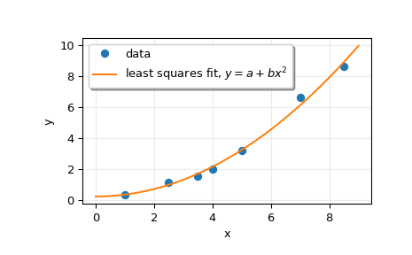

scipy.linalg.lstsq¶
-
scipy.linalg.lstsq(a, b, cond=None, overwrite_a=False, overwrite_b=False, check_finite=True, lapack_driver=None)[source]¶ Compute least-squares solution to equation Ax = b.
Compute a vector x such that the 2-norm
|b - A x|is minimized.- Parameters
- a(M, N) array_like
Left-hand side array
- b(M,) or (M, K) array_like
Right hand side array
- condfloat, optional
Cutoff for ‘small’ singular values; used to determine effective rank of a. Singular values smaller than
rcond * largest_singular_valueare considered zero.- overwrite_abool, optional
Discard data in a (may enhance performance). Default is False.
- overwrite_bbool, optional
Discard data in b (may enhance performance). Default is False.
- check_finitebool, optional
Whether to check that the input matrices contain only finite numbers. Disabling may give a performance gain, but may result in problems (crashes, non-termination) if the inputs do contain infinities or NaNs.
- lapack_driverstr, optional
Which LAPACK driver is used to solve the least-squares problem. Options are
'gelsd','gelsy','gelss'. Default ('gelsd') is a good choice. However,'gelsy'can be slightly faster on many problems.'gelss'was used historically. It is generally slow but uses less memory.New in version 0.17.0.
- Returns
- x(N,) or (N, K) ndarray
Least-squares solution. Return shape matches shape of b.
- residues(K,) ndarray or float
Square of the 2-norm for each column in
b - a x, ifM > Nandndim(A) == n(returns a scalar if b is 1-D). Otherwise a (0,)-shaped array is returned.- rankint
Effective rank of a.
- s(min(M, N),) ndarray or None
Singular values of a. The condition number of a is
abs(s[0] / s[-1]).
- Raises
- LinAlgError
If computation does not converge.
- ValueError
When parameters are not compatible.
See also
scipy.optimize.nnlslinear least squares with non-negativity constraint
Notes
When
'gelsy'is used as a driver, residues is set to a (0,)-shaped array and s is alwaysNone.Examples
>>> from scipy.linalg import lstsq >>> import matplotlib.pyplot as plt
Suppose we have the following data:
>>> x = np.array([1, 2.5, 3.5, 4, 5, 7, 8.5]) >>> y = np.array([0.3, 1.1, 1.5, 2.0, 3.2, 6.6, 8.6])
We want to fit a quadratic polynomial of the form
y = a + b*x**2to this data. We first form the “design matrix” M, with a constant column of 1s and a column containingx**2:>>> M = x[:, np.newaxis]**[0, 2] >>> M array([[ 1. , 1. ], [ 1. , 6.25], [ 1. , 12.25], [ 1. , 16. ], [ 1. , 25. ], [ 1. , 49. ], [ 1. , 72.25]])
We want to find the least-squares solution to
M.dot(p) = y, wherepis a vector with length 2 that holds the parametersaandb.>>> p, res, rnk, s = lstsq(M, y) >>> p array([ 0.20925829, 0.12013861])
Plot the data and the fitted curve.
>>> plt.plot(x, y, 'o', label='data') >>> xx = np.linspace(0, 9, 101) >>> yy = p[0] + p[1]*xx**2 >>> plt.plot(xx, yy, label='least squares fit, $y = a + bx^2$') >>> plt.xlabel('x') >>> plt.ylabel('y') >>> plt.legend(framealpha=1, shadow=True) >>> plt.grid(alpha=0.25) >>> plt.show()
